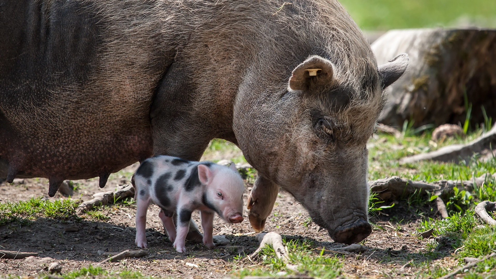

Свині

Розведення свиней як бізнес: з чого почати
Часто можна почути, що в часи кризи заробляють тільки продуктові магазини. Частково це правда. Але крім них прибуток отримують і постачальники тих самих продуктів. У сьогоднішній статті ми поговоримо про бізнес, який побудований на вирощуванні свиней з подальшою їх реалізацією.
Загальні моменти
По-перше, це дуже складний бізнес, який вимагає великих вкладень і трудовитрат, тому якщо ви думаєте, що там немає нічого складного, ви сильно помиляєтеся. Людині, яка не мала раніше досвіду розведення свиней, хоча б в домашніх умовах, важко буде зрозуміти усі нюанси і розібратися з методикою побудови процесу. Але вихід є. Якщо ви хочете побудувати дійсно бізнес, який базується на нових технологіях, то при наявності можливості можна поїхати і подивитися, як будують цей бізнес в Європі. Не потрібно їхати на ті підприємства, де тварин просто загодовують преміксами аби скоріше отримати прибуток, шукайте ті місця, де їх вирощують за класичною технологією. Зараз в моду входить здорове харчування і якісні продукти, тому не робіть помилок на старті відмовтеся від преміксів та різних добавок для швидкого набору ваги тваринам. Беріть якістю, а не кількістю.
По-друге, це те, що вам потрібен буде стартовий капітал та отримання всіх необхідних документів. Відразу не рвіться робити величезну свинячу ферму, почніть з малого. У разі невдачі ви зможете легко згорнути свій бізнес, а втрати будуть мінімальними.
Приміщення для свиноферми
Пошук приміщення – це перший крок запуску бізнесу з вирощування свиней. Якщо ви живете в місті, то є сенс звернути увагу на приміські села. Потрібно об’їхати околиці і підшукати занедбані господарства. Потім зв’язатися з їх власниками і зняти в оренду найбільш підходяще. Знайти приміщення – це тільки пів справи, потрібно його відремонтувати і обладнати усіма необхідними комунікаціями.
Давайте зупинимося на цьому докладніше. З комунікацій вам будуть потрібні:
- електрика;
- вода;
- вентиляція;
- опалення. В якості опалювальних систем можете застосовувати твердопаливні котли.
Якщо розміри приміщення досить великі постарайтеся ремонтувати й облаштовувати його по частинах. Відокремити частини можна за допомогою дешевих піноблоків.
Устаткування
Як і будь-який бізнес, підприємство з розведення свиней вимагає закупівлі потрібної апаратури. На початкових етапах можна частину роботи робити і вручну, але з ростом кількості голів, вам потрібно буде все-таки автоматизувати частину процесів. Найбільш часто під автоматизацію потрапляють системи роздачі їжі і води, а також, система забору відходів. При виборі системи подачі їжі потрібно спочатку визначитися, в якому форматі буде відбуватися годівля. Існує два види: сухий корм і рідкий корм, саме від формату залежатиме ціна обладнання.
Більш кращим є сухий тип годівлі. По-перше, ви заощадите на обладнанні. По-друге, будемо менше запитань від контролюючих органів. На більшості таких ферм використовується система роздачі корму з бункера з наступним його розподілом по спіральному кормопроводу.
Породи свиней
Існує багато різних порід даної тварини. У нас в країні найбільш прижилися такі види: біла велика льоха і в’єтнамська вислобрюха свиня. При виборі породи варто звернути увагу на м’ясні групи породи. Так, їх можна розділити на: сальні, м’ясосальні, м’ясні, беконні. Найбільш прибутковими є останні два типи, оскільки м’ясо як продукт саме по собі дорожче сала.
Технологія вирощування свиней
Ми вже з вами говорили про приміщення і обладнання, але як саме це все об’єднати в підприємство поки не ясно. На допомогу прийдуть готові рішення іноземних компаній. Найбільш популярними технологіями можна назвати – датську і канадську. Давайте розглянемо їх детальніше.
Датська технологія вирощування свиней
Фішкою даної технології є побудова підлогових покриттів, а також поділ ділянок приміщення під різні завдання. Давайте детальніше. В умовах розведення дорослих особин свиней їх поміщають в клітки з бетонною підлогою у вигляді решітки. Така конструкція покриття забезпечує автоматичний відведення гною. Ви економите не тільки на щоденних змінах підстилки для тварин, але і рятуєтеся від щоденної фізичної праці. Для свиноматок і маленьких поросят підлогове покриття роблять із пластику, а приміщення обладнують хорошими системами опалення та вентиляції. Для зовсім маленьких роблять місця обігріву, в яких встановлюється інфрачервоні лампи та обігрівачі.
Канадська технологія вирощування свиней
Тут трохи інші умови вирощування свиней. Дана технологія використовується в основному для дрібних фермерських господарств. В якості підстилки тут використовується незамінний шар з сухої соломи або тирси. Кожного дня працівники підсипають цей матеріал, оновлюючи підлогове покриття, а гниючий шар, створює всі необхідні умови тепловіддачі. Як бачите, цей метод підходить більше для домашніх господарств, він швидко окупається і дозволяє при мінімальних вкладеннях розширювати поголів’я.
Давайте розрахуємо бізнес план для дрібного фермерського господарства, яке займатиметься свинями.
Давайте припустимо, що ферма складатиметься з 20 свиноматок. Кожна з них в рік може плодити від 10 до 15 поросят. Так, в середньому в рік можна виростити на відгодівлю близько 250 поросят. За рік вони можуть набрати близько 100 кг ваги, при продажу це буде близько 60 кг м’ясної продукції. Якщо брати в середньому вартість цієї продукції близько $6, то можна розрахувати що за рік ви заробите близько $90 000. Якщо прибрати з цієї суми податки, виплату заробітної плати, корм, оплату рахунків з комунікацій, то можна сміливо ділити її на два. Результат непоганий, але це в ідеалі. На практиці все може бути сумніше. То продали дешевше, то свині захворіли, таке теж часто буває.
Персонал
Крім різноробочих, які займатимуться самими свинями, а їх потрібно як мінімум двоє, вам будуть потрібні: ветеринар, бухгалтер, охоронець, прибиральниця. Ветеринара і бухгалтера можна брати на неповну зайнятість, а охоронець повинен бути на фермі постійно, потрібні будуть 2 людини з позмінним графіком.
Корм
Найбільш ходовим кормом є зерно. Його потрібно закуповувати у великих кількостях. Також, в раціон свиней фермери додають кормові добавки. Не забувайте і про вітаміни. Для утримання свиноматок потрібно буде купувати спеціальні кормосуміші. Досвідчені фермери виводять свої власні рішення, або ж купують готові варіанти. Важливе значення мають економічні бізнес розрахунки для фермерського свинарського господарства, де одночасно ставиться на вирощування і відгодівлю кілька десятків свиней. При цьому вдається заощадити на кормах, закуповуючи їх відразу за оптовою ціною. Ідеальною, для бізнес плану свинарства, можна вважати ситуацію, коли свинар володіє ділянкою землі, де вирощуються як коренеплоди, картопля, так і бобові, зернові, трав’янисті культури. Відповідно до сучасної статистики, найбільших успіхів при вирощуванні і розведенні досягли свинарі, що поєднують вирощування кормових культур, розведення свиней і виробництво декількох видів м’ясоковбасних виробів в рамках одного свинарського фермерського господарства.